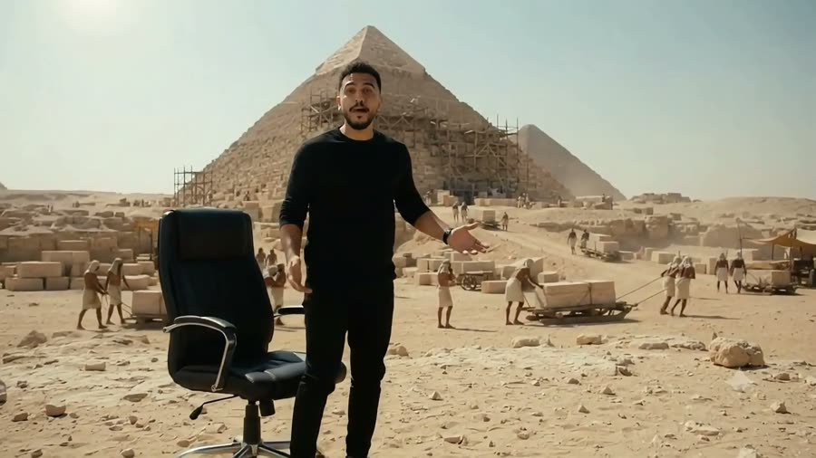

فيديو بالـAI من صورة واحدة… ببلاش
ده البرومبت اللي عملت بيه فيديو السفر عبر الزمن في Google Vids

الخطوات
- افتح vids.new بحساب جوجل بتاعك.
- اختار توليد فيديو بالـAI، وارفع صورة واضحة ليك (الوش والجسم).
- انسخ البرومبت اللي تحت والزقه، وغيّر الجمل اللي بين علامات التنصيص للكلام اللي عايز تقوله.
البرومبت
Create a 15-second ultra-photorealistic Hollywood-quality cinematic time-travel sequence, vertical 9:16, 24fps, with the illusion of one continuous camera shot. IDENTITY LOCK: Use the uploaded reference photograph as the exact identity of the main character. Preserve his facial structure, natural skin texture, short curly hair, beard, hairstyle, body proportions, and recognizable features throughout all frames. WARDROBE AND CHAIR LOCK: The main character wears the same black outfit throughout. He begins seated in a distinctive modern black office chair with padded armrests. The chair must remain IDENTICAL throughout the entire sequence, including its shape, material, proportions, and armrests. SCENE 1 — MODERN STUDIO (0–4 SECONDS): A dark, sophisticated documentary studio with a wooden desk, subtle blue ambient lighting, warm practical lights, and cinematic shadows. The man sits facing the camera. Medium close-up, 35mm cinema lens, natural shallow depth of field. He leans forward, raises one hand slightly and speaks directly to the audience in authentic Egyptian Arabic: "استنى... أنا مش هنا علشان أتكلم، أنا هنا علشان أوريك!" His delivery is confident, spontaneous, and conversational, with accurate Arabic lip synchronization. SCENE 2 — VIOLENT TIME ACCELERATION (4–8 SECONDS): Immediately after the final word, a powerful invisible force suddenly pulls the man and his chair backward at extreme speed. His body reacts naturally to the acceleration. He grabs both armrests. His expression changes instantly from confidence to shock. The desk remains stationary as papers fly from the sudden air displacement. The camera accelerates backward with the man, tracking his face while the studio stretches into intense directional motion blur. A physically believable spatial distortion forms around him. Restrained blue-white light streaks, gravitational lensing, volumetric particles, realistic wind effects, and deep cinematic motion blur. The chair remains solid and unchanged. No body deformation. SCENE 3 — ARRIVAL IN ANCIENT EGYPT (8–11 SECONDS): The time distortion rapidly opens into bright natural sunlight. The man and the exact same chair emerge onto the Giza Plateau during the reign of Pharaoh Khufu, approximately the 26th century BCE. The chair lands and slides across firm sandy limestone ground. Fine dust rises naturally around the legs. Behind him, Khufu's Great Pyramid is under construction. Large limestone blocks, workers in historically appropriate Old Kingdom linen clothing, wooden sledges, ropes, and construction activity are visible. The pyramid is partially completed. The surrounding environment is based on archaeological evidence rather than fantasy. The camera decelerates into a stable medium-wide shot. SCENE 4 — THE HISTORICAL REVEAL (11–15 SECONDS): The man turns his head toward the construction site in disbelief. He quickly rises from the chair while keeping the chair in view. He looks back at the camera, visibly amazed, and says in authentic Egyptian Arabic: "إحنا في مصر... من أكتر من أربعة آلاف وخمسمية سنة! بس إزاي بنوا كل ده؟" The camera begins a smooth cinematic move toward workers transporting limestone blocks, preparing the next scene. SOUND DESIGN: 0–4s: Natural close-microphone voice, quiet studio ambience. 4–5s: Powerful cinematic bass impact, chair vibration, paper flutter. 5–8s: High-speed wind, Doppler whoosh, low-frequency rumble. 8–11s: Sudden portal collapse, scraping chair, dust and desert wind. 11–15s: Authentic Egyptian Arabic dialogue, distant human activity, footsteps, wooden sledges and stone movement. VISUAL QUALITY: Ultra-photorealistic, physically believable lighting, cinematic exposure, natural motion blur, detailed skin and fabric, realistic atmospheric dust, consistent identity, professional film-grade color grading. HISTORICAL ACCURACY: Fourth Dynasty, Khufu's reign. No completed Khafre or Menkaure pyramids. No modern cranes, no steel machinery, no fantasy Egyptian costumes, no futuristic structures. Construction methods must remain consistent with plausible Old Kingdom technology without presenting a speculative method as proven. NEGATIVE CONSTRAINTS: No facial morphing, no identity changes, no chair replacement, no duplicated arms or fingers, no floating chair after arrival, no sudden outfit changes, no cartoon animation, no unrealistic CGI appearance, no subtitles, no logos, no camera cuts.
نصايح
- عندك 3 فيديوهات بس في الشهر، كل واحد 15 ثانية، فراجع البرومبت كويس قبل ما تولّد.
- قسّم الـ15 ثانية لمشاهد بتوقيتها زي ما هو مكتوب، عشان الفيديو يطلع لقطة واحدة متصلة.
- الفيديو ممكن يطلع عرضي حتى لو طلبت رأسي، فخلّي نفسك في نص الكادر.